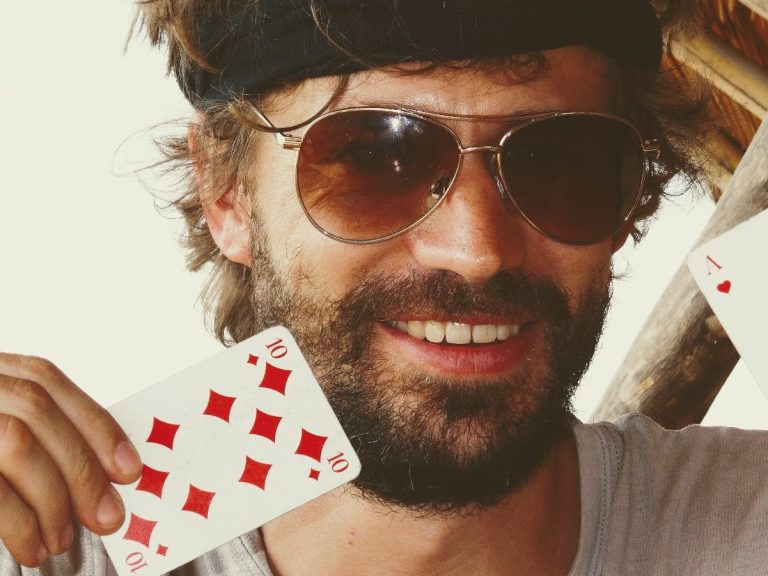
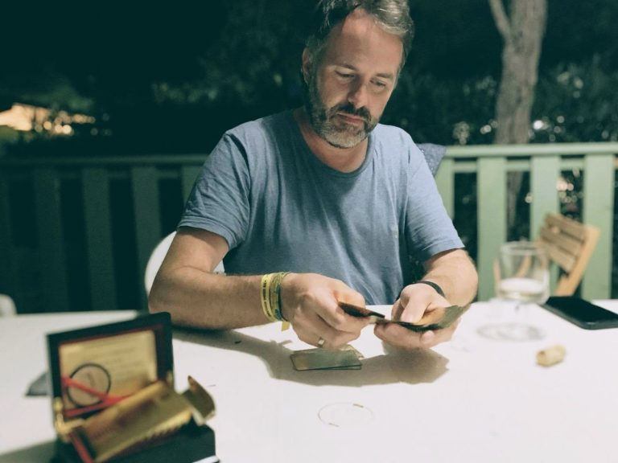
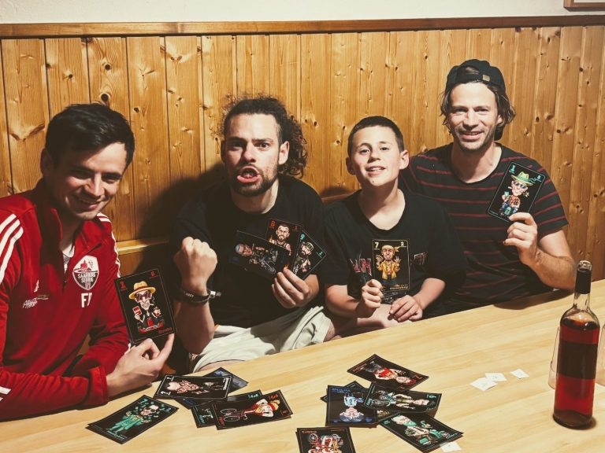

Wie alles begann
Ein Kartenspiel für 2 bis 4 Spieler · Spielidee: Sebastian Boos & Roland Heck
Also schnall dich an, denn das ist keine Geschichte vom Zeichentisch, sondern direkt aus dem dreckigen Hinterhof des Lebens, geformt durch unzählige Stunden in vollen Zügen, literweise Bier und die pure Not, sich nicht mehr miteinander unterhalten zu müssen!
Fast 15 Jahre ist es her, dass Bronko-Donko in Rolands und meinem Kopf entstand. Wir waren genervt. Genervt von Kartenspielen, die zu zweit einfach keinen Bock machen. Skat? Braucht einen Dritten. Mau-Mau? Einschläfernd!
Wir verbrachten Stunden, Tage auf Reisen und brauchten eine Ablenkung. Wir wollten was Taktisches, etwas, das die Freundschaft auf die Probe stellt. Und so begann das Zeitalter von Bronko-Donko.

Es war nicht nur ein Spiel. Es war unser Ritual. Abende, Tage, ganze Urlaube lang haben Roland und ich ununterbrochen gezockt, haben jede Runde zelebriert, bis die Augen brannten und die Hirnwindungen qualmten. So gut war dieses Drecksspiel! Wir waren besessen.
Wir haben uns sogar ein vergoldetes Kartendeck in einer edlen Holzbox besorgt und einen eigenen Donko-Button anfertigen lassen – obwohl wir immer noch mit ganz normalen Skat-Karten spielten. Die Namen der Karten hatten sich längst geändert, niemand sprach mehr von Assen oder Königen. Es gab nur noch die Donkos, die Cobras oder die Hautzen. Das Grundkonzept saß, die Sucht war real.
Wir haben unermüdlich gespielt, immer zu zweit, und maximal eine Handvoll anderer Leute mal in unser geheimes Regelwerk eingeweiht. Im Grunde waren wir über eine Dekade die einzigen beiden Menschen auf diesem Planeten, die dieses geile Spiel wirklich spielten.

Doch diese Ära der Exklusivität ist vorbei! Es war an der Zeit, dieses Monster von Spiel der Welt zu präsentieren. Seitdem feile und schleife ich unermüdlich an der Storyline, entwickle die Charaktere und schraube am Regelwerk, bis es logisch und absolut konsistent ist. Durch diese intensive Beschäftigung sind noch ein paar brandneue Ideen entstanden.
Mit einem eigenen Deck konnte ich nun Möglichkeiten nutzen, die früher undenkbar waren. So habe ich zum Beispiel die Schläger mit ihren individuellen Lebenspunkten (LP) ins Spiel gebracht – früher wurden einfach nur Punkte bis 10 gezählt, dann war die Meisterschaft entschieden.

Und was für die Veröffentlichung unerlässlich war: Ich habe das Spiel endlich mit bis zu vier Spielern getestet und die Regeln entsprechend erweitert. Alle Beteiligten müssen zugeben: Sie hatten eine Menge Spaß und sind zu 100% auch bei den Supporters 100 am Start!
Selbst ich musste erkennen, dass die Dynamik mit mehr als zwei Spielern eine ganz andere ist. Ich selbst hatte mit einem überragenden Blatt zu Demonstrationszwecken direkt mal die Weste ausgezogen – und Bähm! – äh, Gäng-Bäng! Über 110 Schlagkraft kassiert, und meine ganze Truppe war mit einem Streich ausgelöscht. So brutal kann der Hinterhof sein!
Hast du Feedback? Ideen? Vorschläge? Dann her damit! Schreib mir einfach eine Mail an der.baenker@bronko-donko.com.
Denn nur gemeinsam machen wir Bronko-Donko zur unangefochtenen Nummer Eins auch in deinem Hinterhof!